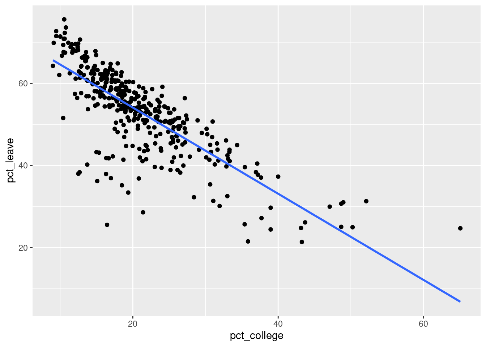

df <- read.csv("brexit.csv")Tutorial 2
Introduction
In this tutorial we will explore the brexit.csv dataset, which featured in the exam in October 2019. The data contains the percentage of people who voted for Brexit in each voting district in England, Scotland and Wales. It also contains demographic information for each district. The variables are:
pct_leave: The percentage that voted in favor of Brexit.pct_under_30: The percentage of people under 30.pct_30_to_59: The percentage of people aged 30-59.pct_60_and_over: The percentage of people 60 and over.pct_college: The percentage of people with a college degree.pct_oth_eu: The percentage of people from outside the EU.pct_non_eu: The percentage of people from other EU countries.scotland: A variable that =1 if the district is in Scotland and =0 otherwise.wales: A variable that =1 if the district is in Wales and =0 otherwise.
All percentage variables are measured from 0-100. Note that if both the variables scotland and wales are zero, then the district is in England (because Northern Ireland is not included in the dataset).
Exercises
- Find the correlation between
pct_leaveand all other variables. Which has the strongest correlation (in absolute value)? Call this variable x for the remaining exercises. - Create a scatter plot with a regression line between x and
pct_leaveand comment. - Estimate a simple linear regression model of
pct_leaveon x and write down the sample regression line. - Interpret the intercept and slope of this regression.
- Is the variable x statistically significant at the 1% level? Use the critical value method.
- Test the following claim at the 5% level: “districts with a one percentage-point higher x on average have a larger than one percentage point lower vote for Brexit.” Use the p-value method.
- Estimate a 95% confidence interval for the slope of the regression line and interpret it.
Solutions
Question 1
We begin by loading the data:
We could get the correlation of pct_leave with each variable one-by-one, like with:
cor(df$pct_leave, df$pct_under_30)[1] -0.2943724But we can get all the pairwise correlations together by providing only the dataframe to cor():
cor(df) pct_leave pct_under_30 pct_30_to_59 pct_60_and_over
pct_leave 1.000000000 -0.29437235 -0.06913165 0.341862833
pct_under_30 -0.294372350 1.00000000 -0.32468156 -0.844597529
pct_30_to_59 -0.069131647 -0.32468156 1.00000000 -0.232170234
pct_60_and_over 0.341862833 -0.84459753 -0.23217023 1.000000000
pct_college -0.786485928 0.18536996 0.23738738 -0.325010312
pct_oth_eu -0.545588004 0.32909124 0.05071365 -0.367141525
pct_non_eu -0.486729325 0.61224230 -0.13626761 -0.552486820
scotland -0.408246661 -0.05695033 0.09874484 0.002670691
wales 0.004932346 -0.01866851 -0.15089991 0.104618336
pct_college pct_oth_eu pct_non_eu scotland wales
pct_leave -0.78648593 -0.54558800 -0.4867293 -0.408246661 0.004932346
pct_under_30 0.18536996 0.32909124 0.6122423 -0.056950328 -0.018668513
pct_30_to_59 0.23738738 0.05071365 -0.1362676 0.098744835 -0.150899906
pct_60_and_over -0.32501031 -0.36714152 -0.5524868 0.002670691 0.104618336
pct_college 1.00000000 0.77896130 0.5978028 -0.021951016 -0.086858206
pct_oth_eu 0.77896130 1.00000000 0.7069857 -0.145430666 -0.125996207
pct_non_eu 0.59780280 0.70698568 1.0000000 -0.146420457 -0.135201428
scotland -0.02195102 -0.14543067 -0.1464205 1.000000000 -0.075171842
wales -0.08685821 -0.12599621 -0.1352014 -0.075171842 1.000000000Looking under the 1st column pct_leave, we can see the correlation with every other variable (including the -0.29437 that we calculated above). The correlation with itself is always one. The strongest correlation is with pct_college at -0.7865. This means there is a strong negative linear relationship between pct_college and pct_leave. This says that places with more people with a college degree were less likely to vote for Brexit.
Question 2
We create the scatter plot with a regression line:
library(ggplot2)
ggplot(df, aes(pct_college, pct_leave)) +
geom_point() +
geom_smooth(method = "lm", se = FALSE)`geom_smooth()` using formula = 'y ~ x'
Just like with the correlation, we see a negative linear relationship between pct_college and pct_leave.
Question 3
We estimate the model with:
m <- lm(pct_leave ~ pct_college, data = df)
summary(m)
Call:
lm(formula = pct_leave ~ pct_college, data = df)
Residuals:
Min 1Q Median 3Q Max
-32.252 -1.959 1.410 4.022 17.882
Coefficients:
Estimate Std. Error t value Pr(>|t|)
(Intercept) 75.06583 0.94520 79.42 <2e-16 ***
pct_college -1.04864 0.04235 -24.76 <2e-16 ***
---
Signif. codes: 0 '***' 0.001 '**' 0.01 '*' 0.05 '.' 0.1 ' ' 1
Residual standard error: 6.441 on 378 degrees of freedom
Multiple R-squared: 0.6186, Adjusted R-squared: 0.6176
F-statistic: 613 on 1 and 378 DF, p-value: < 2.2e-16The sample regression line is then:
\widehat{y}_i = 75.06583 - 1.04864 x_i
Question 4
The intercept gives the model’s predicted value of y when x=0. So for discricts with nobody with a college degree, the predicted vote share for Brexit is 75.0658%. However, there are no such districts in the data:
summary(df$pct_college) Min. 1st Qu. Median Mean 3rd Qu. Max.
9.004 15.712 19.135 20.908 24.372 65.073 The district with the lowest percentage is 9.004%. So we may not be able to trust this prediction.
The slope gives the expected change in the vote share for Brexit when we increase the percentage of inhabitants with a college degree by one percentage point. So a one percentage-point increase in people with a college degree on average lowers the vote share for Brexit by 1.04864 percentage points.
Question 5
The null and alternative hypotheses are: H_0: \beta_1 = 0 \qquad H_1: \beta_1 \neq 0 where H_0 is “the variable is insignificant” and H_1 is “the variable is significant”. Under H_0, T=\frac{B_1}{S_{B_1}}\sim t_{n-2}. We can see the value of the test statistic from the summary table:
summary(m)
Call:
lm(formula = pct_leave ~ pct_college, data = df)
Residuals:
Min 1Q Median 3Q Max
-32.252 -1.959 1.410 4.022 17.882
Coefficients:
Estimate Std. Error t value Pr(>|t|)
(Intercept) 75.06583 0.94520 79.42 <2e-16 ***
pct_college -1.04864 0.04235 -24.76 <2e-16 ***
---
Signif. codes: 0 '***' 0.001 '**' 0.01 '*' 0.05 '.' 0.1 ' ' 1
Residual standard error: 6.441 on 378 degrees of freedom
Multiple R-squared: 0.6186, Adjusted R-squared: 0.6176
F-statistic: 613 on 1 and 378 DF, p-value: < 2.2e-16We can extract it with:
(t <- coef(summary(m))["pct_college", "t value"])[1] -24.75847The critical value is:
(cf <- qt(0.975, m$df.residual))[1] 1.96626Because the absolute value of the test statistic is larger than the critical value:
abs(t) >= cf[1] TRUEWe reject the null hypothesis. The variable is significant.
Question 6
The question is asking to test if \beta_1<-1, i.e. that the effect is even larger in absolute value than -1.
The null and alternative hypotheses are: H_0: \beta_1 \geq -1 \qquad H_1: \beta_1< -1 Under H_0, T=\frac{B_1-\left(-1\right)}{S_{B_1}}=\frac{B_1+1}{S_{B_1}}\sim t_{n-2}.
We can calculate the test stastic from parts of the summary table:
(b_1 <- coef(summary(m))["pct_college", "Estimate"])[1] -1.048641(s_b_1 <- coef(summary(m))["pct_college", "Std. Error"])[1] 0.04235484(t <- (b_1 + 1) / s_b_1)[1] -1.148416The p-value is:
pt(t, m$df.residual)[1] 0.1257616Because the p-value is greater than the significane level of 5%, we fail to reject the null hypothesis. There is not enough evidence to suggest that the effect is larger than -1 in absolute value at the 5% level.
If we were doing the critical value method, we can calculate this with:
(cf <- qt(0.05, m$df.residual))[1] -1.648895Because the value of the test statistic is not less than the critical value:
t < cf[1] FALSEWe fail to reject the null hypothesis as well.
Question 7
confint(m, "pct_college", level = 0.95) 2.5 % 97.5 %
pct_college -1.131922 -0.9653604We are 95% confident that the true regression slope is between -1.132 and -0.965. The entire interval is below zero. Therefore we are 95% confident that pct_college has a negative effect on pct_leave.